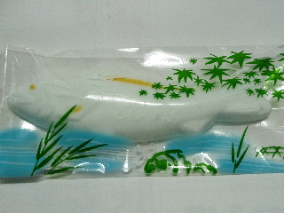

島根県出雲市天神町513-6
更新日 : 2011/08/15
ささ井屋さんの医大通り店で買った、マシュマロの若鮎です。

ささ井屋さんの商品かと思ったら違っていて、大阪市生野区の㈱八千代堂ってところのモノでした。レシートには、和仕入れ商品と書かれていました。
マシュマロって久々に食べた気がします。中にいちごジャムが入っているんですが、素朴で懐かしい感じの味がしました。
子供よりも大人向けにいいかも？って思いました。
【おいしいものを食べよう。】【たくさん寝よう。】
【ソロ活をしよう!】【季節感のあることをしよう。】【動画視聴はほどほどに。】【当サイトの全てのコンテンツは無断転載禁止です。】